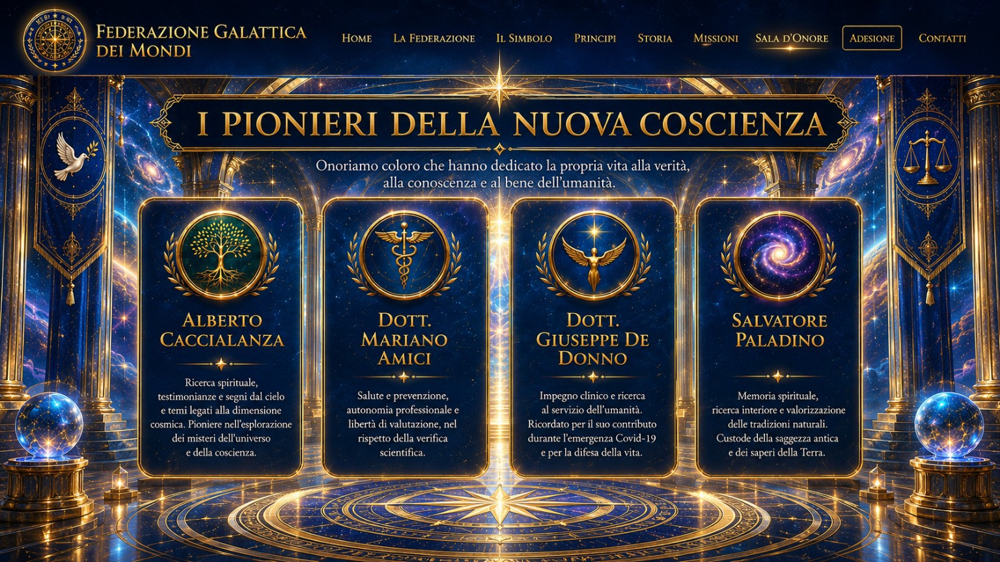
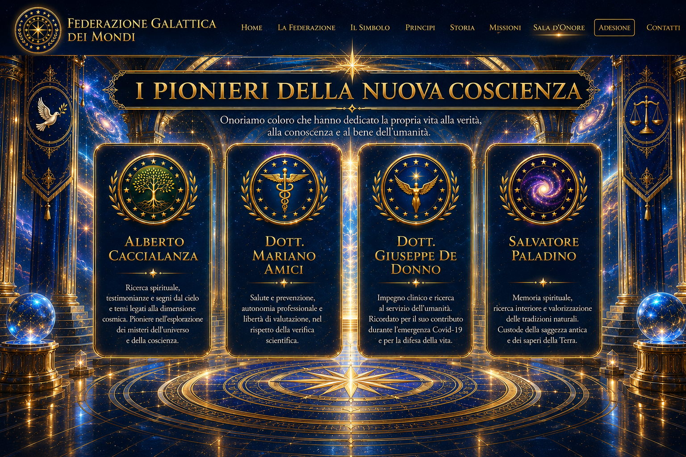

Riconoscimenti
Membri onorari, figure in missione e memoria delle persone scomparse.
Membro onorario in missione
Riconoscimento per il contributo ai valori della conoscenza, della libertà di pensiero e della tutela della vita.
Membro onorario in missione
Riconoscimento per il percorso umano e professionale e per l’impegno nei valori fondativi.
Membro onorario
Contributo al percorso di costruzione e sostegno della Federazione.
Membro onorario
Adesione ai valori di pace, giustizia, conoscenza, libertà e progresso.
In memoria
Ricordato per l’impegno clinico e la ricerca al servizio dell’umanità.
In memoria
Ricordato per il percorso spirituale e la valorizzazione delle tradizioni naturali.

